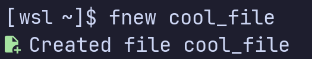

I got bored
sOrg is a solo project and still a huge work in progress. More features are to come out soon
Most of the promised stuff here didn't even come out yet
Everything in sOrg can be compiled to (at least) Windows and Linux
Soon, precompiled binaries will be also available
Windows
Linux (WSL2)
sOrg includes tools for system management and development
Whether you're writing code or suffering for hours while debugging, sOrg is built to support your needs
The entirety of sOrg is completely free, open source and can be viewed Here
Anyone can view the source code and admire how horrible it is
Only few example projects are shown. View more on Github
The biggest one yet: A complete (not really, yet to be completed) set of coreutils aimed for simplicity and less confusion for new users
Good if you have just started learning
A really simple TUI markup language viewer written using ncurses
A CLI script to generate color schemes from a few given parameters
Made with hatred by Me